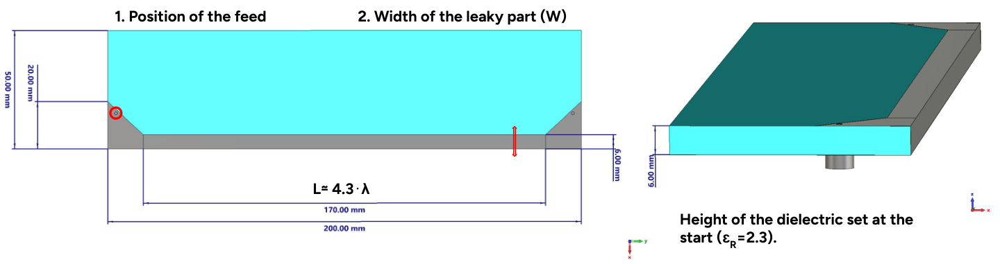
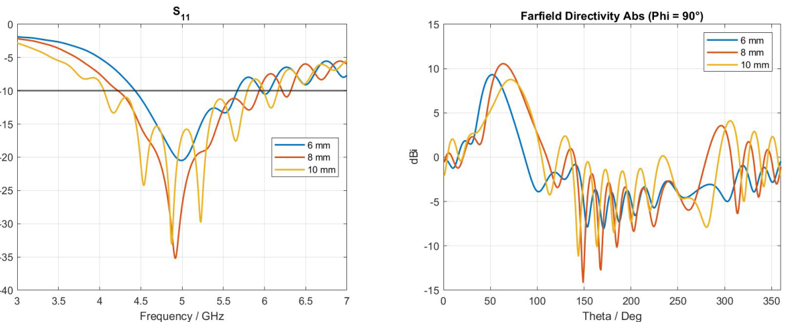
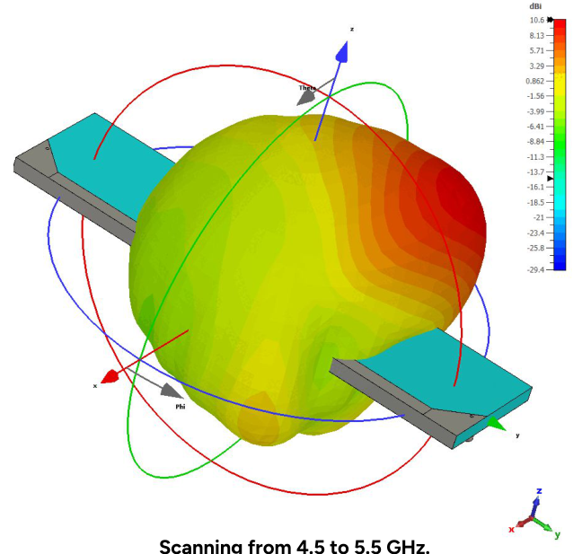
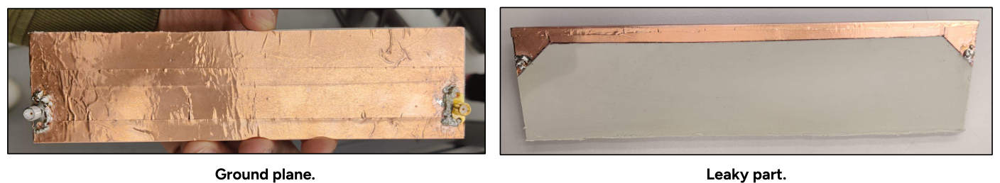
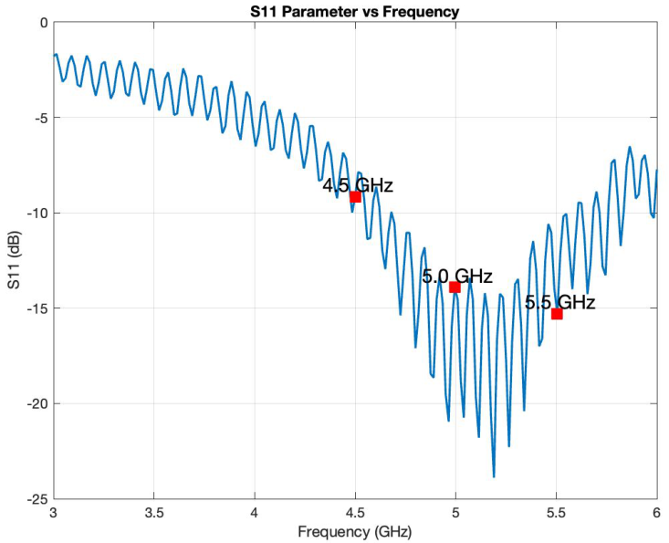
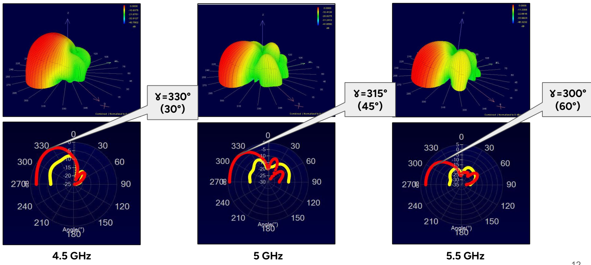
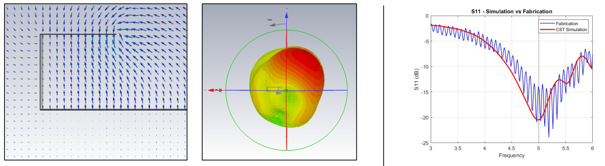

The challenge
Can one compact strip produce a useful, matched beam?
The design called for an antenna centered around 5 GHz, with about 1 GHz of usable bandwidth, a desired beam near 45°, and sidelobes below −10 dB. These goals compete: changing the strip width or feed can improve matching while broadening the beam or raising sidelobes.
A half-width microstrip leaky-wave antenna uses a narrow conducting strip over a grounded dielectric. Rather than radiating at a single point, energy leaks from the traveling wave along the structure. Its geometry and feed therefore shape both the input reflection (S11) and the far-field pattern.
01 · Shape the radiator
Start with the substrate, feed, and leaky width
The CST model used a 6 mm-thick dielectric with relative permittivity 2.3, a radiating section roughly 4.3 wavelengths long, and a coaxial feed. The team optimized feed position and the width of the leaky section, then added a taper to improve impedance matching.
- 01
Build the electromagnetic model
Define the grounded dielectric, strip, edge wall, coax feed, and radiation boundary in CST.
- 02
Tune the feed
Move the feed point and taper the transition to reduce reflected power near 5 GHz. The documented offset was Δx = 5 mm, Δy = 3.5 mm.
- 03
Sweep the leaky width
Compare 6, 8, and 10 mm versions using both S11 and far-field plots, then choose a compromise rather than optimizing only one metric.

02 · Compare trade-offs
The 6 mm width gave the best overall compromise
All three widths were evaluated around the target band. The narrower leaky section produced a more focused beam, while the design still needed acceptable matching. The project selected 6 mm after comparing the field and radiation patterns with S11.


Important distinction: the simulated bandwidth exceeded the 1 GHz target, but the simulated sidelobe level of −7.5 dB missed the below-−10 dB requirement. The width choice was a design compromise, not a full pass against every target.
03 · Make it physical
Fabricate a copper-and-polypropylene prototype
The antenna was made on a 6 mm polypropylene substrate (nominal relative permittivity 2.3) with approximately 0.036 mm copper tape and a coaxial feed. A vector network analyzer measured input reflection; a near-field scanner supplied the radiation-pattern measurements.

04 · Measure the result
The prototype matched near 5 GHz, with visible differences
The measured reflection curve indicates a roughly 4.5–5.5 GHz matching region. It also contains ripple and discontinuities absent from the cleanest simulation. Radiation scans at 4.5, 5, and 5.5 GHz show a directional beam, but its direction and peak differ from the model.



05 · What the test established
A working prototype, with clear next design steps
The project demonstrated the complete design-to-measurement loop for a half-width microstrip leaky-wave antenna. Simulations suggested a broad operating band; the fabricated antenna showed approximately the intended 1 GHz matching span around 5 GHz and a directional radiation pattern.
It was not a clean match to every target. The reported simulated sidelobe level missed the specification, while measured matching had ripple and the beam shifted from simulation. The presentation suggests a full dielectric substrate as one route to a smoother reflection response, though it would use more material. A next iteration would quantify material and fabrication tolerances, then retune the edge and feed to improve sidelobes and beam alignment.